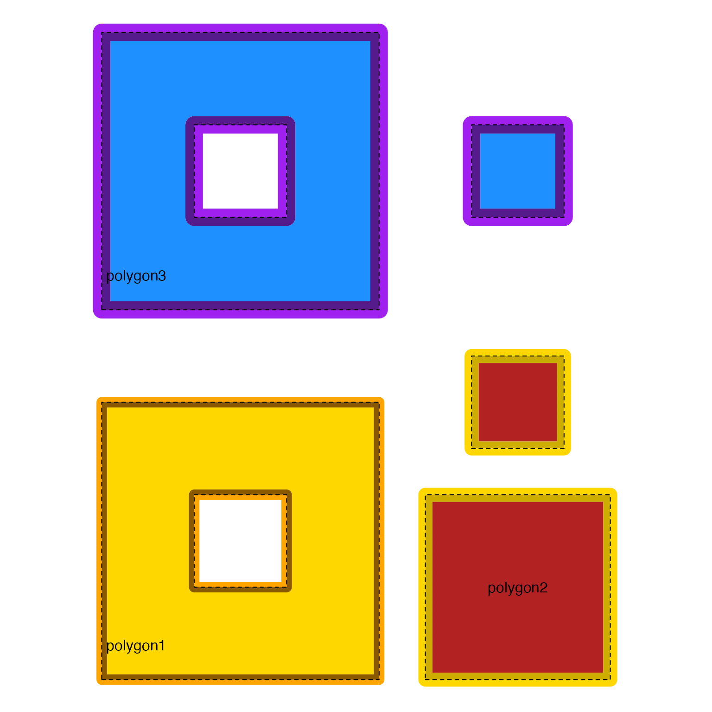
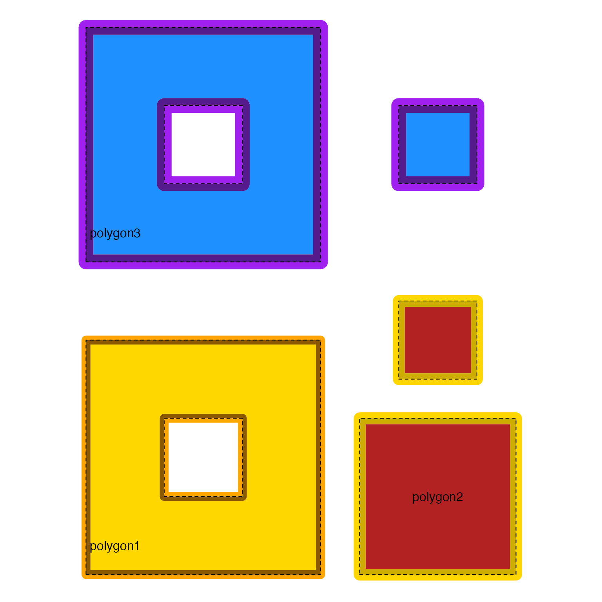

Plot JamPolygon object
Usage
plot.JamPolygon(
x,
y,
xlim = NULL,
ylim = NULL,
flip_sign = 1,
render_vectorized = FALSE,
render_thin_border = TRUE,
linejoin = c("bevel", "mitre", "round"),
mitrelimit = -20,
show_labels = TRUE,
buffer = 0.05,
do_newpage = TRUE,
do_viewport = TRUE,
do_pop_viewport = TRUE,
do_draw = TRUE,
verbose = FALSE,
debug = FALSE,
...
)Arguments
- x
JamPolygonobject- y
not used.
- xlim, ylim
numericoptionally used to define the x- and y-axis range to be rendered. WhenNULLthey are defined using the observed range of values.- flip_sign
logicalindicating whether to flip the polygon orientation, ornumericwhere the sign is multiplied by the polygon orientation. The polygon orientation is used to define inner/outer border, relative to whether the border represents a solid inner polygon, or the hole inside a solid polygon. In most cases, the orientation is automatically recognized and applied appropriately. Specifically:TRUEor-1reverses the polygon orientation of inner/outer borderFALSEor1keeps the polygon orientation unchanged.
- render_vectorized
logicalindicating whether to render all polygons in one call, thereby ignoringinnerbordervalues. Allbordervalues are rendered as regular polygon borders. This option may be substantially faster for large collections of polygons.- render_thin_border
logicalindicating whether to render a thin border on the border itself, defaultTRUErenders a thin grey line.- linejoin
characterstring (default"bevel") passed togrid::grid.path()andvwline::grid.vwline()when rendering polygons, and inner/outer polygon borders, respectively. Note that vwline version0.2.2displayed some graphical glitches when used with"mitre"and"round", so"bevel"is the new default.- mitrelimit
numericpassed tovwline::grid.vwline()to adjust the maximum extension at a line join caused bylinejoin="mitre".- show_labels
logicalindicating whether to render labels for each polygon. Note that labels are rendered after all polygons are drawn, so they will not be covered by other polygons.- buffer
numericused to expand the x- and y-axis range beyond the polygons to be drawn.- do_newpage
logical(default TRUE) indicating whether to callgrid::grid.newpage()to open a new graphical output page.- do_viewport
logical(default TRUE) indicating whether to define and push a newgridviewport withgrid::grid.pushViewport().- do_pop_viewport
logical(default TRUE) indicating whether to close/pop thegridviewport withgrid::popViewport(). This action is only performed whendo_viewport=TRUE. This option is intended to allow layering multiple calls to this or othergridfunctions.- do_draw
logical(default TRUE) indicating whether to callgrid::grid.draw()for each graphical object. Whendo_draw=FALSE, it also forcesdo_newpage=FALSE,do_viewport=FALSE, anddo_pop_viewport=FALSE.- verbose
logicalindicating whether to print verbose output.- debug
logical(default FALSE) indicating whether to enable debug operations. Whendebug=TRUEit is also passed togridfunctions such asvwline::grid.vwline()to display internal calculations in the graphical output.- ...
additional arguments are recognized to customize plot features.
Value
JamPolygon object, invisibly. Some grid attributes are
added to the returned object:
"adjx","adjy": functions to adjust native x/y values to the correspondinggridunits in"snpc"."viewport": thegrid::viewport()object suitable to push the same viewport in order to add features to an existing plot."xrange","yrange": x- and y-axis ranges used to determine the viewport to be used."grob_tree": agrid::gTreeobject suitable to callgrid::grid.draw(). It includes the sameviewport, so it does not need to have the viewport defined.
Details
This function is a general purpose function to plot JamPolygon
objects using grid graphics.
It currently calls direct rendering functions, for example
grid::pathGrob(), grid::grid.lines(), gridGeometry::polyoffsetGrob()
to render complex, potentially nested polygons with or without
holes, and with inner, outer, and/or direct border.
Rendering guidelines used by this function:
Each polygon is rendered in order, and in series, with no parallelization.
All polygon labels are rendered afterward, so that labels are not covered by subsequent polygons. Labels are intended to appear "on top" of all rendered polygons.
Borders are drawn after each polygon "fill" is performed, so the border can modify the look of the fill. Borders are rendered with inner, outer, then direct border, in that order. The polygon area "fill" is also shrunk by the width defined by
innerborder.lwd, unlessinnerborderis NA, so that the inner border does not affect the same region represented by the area fill.Since polygons are drawn in the order they are provided by the
JamPolygonobject, one polygon may be drawn on top of another polygon, using default R methods to overlay one color onto another, for example with optional alpha transparency.
Rendering options recognized in jp@polygons:
name,label- name and display label. AlabelofNAor""will not be rendered.label_color- color used to render each polygon label.family,fontsize- font family, and font point size used to render each polygon label, passed togrid::gpar()by default. Note thatvenndir()andrender_venndir()may internally callmarquee::marquee_grob()which does not usegrid::gpar().x,y- x- and y-coordinates to define each polygon or multipolygon. These columns are required for aJamPolygonobject.fill- polygon fill color, orNAfor no fill color.innerborder,innerborder.lwd- inner border and line width. The inner border is drawn inside the polygon absolute boundary.outerborder,outerborder.lwd- inner border and line width The inner border is drawn outside the polygon absolute boundary.border,border.lwd- border color and line width (outer border). The border is drawn on top of the polygon absolute boundary. Note that when two polygons share the same border, one border will necessarily overwrite the other. For this reason, the innerborder may be useful in order to preserve the color of each polygon border without overlap.
Return grobs
To return the list of grobs to be drawn without drawing them, use
do_draw=FALSE, which also does not callgrid::grid.newpage().
Todo
Enable arguments in
...to override equivalent values in columns ofjp@polygons. Partially complete.Convert
gridrendering to generate graphical objects (grobs) which can be optionally rendered, or returned as agTree. Mostly complete.Consider allowing labels for each multi-part polygon. Low priotity.
Consider drawing optional x- and y-axis, although both could be added using
gridfunctions. Key option would be to transformadjx(),adjy()to represent actual numeric values instead of'snpc'coordinates. Low priority.Consider using different approach than
'snpc'to enforce aspect ratio, for example ggplot2 usesrespect=TRUEthen leaves the x/y axis ranges intact. Making that change would affect other venndir functions that may assume scaled units are between 0 and 1.
See also
Other JamPolygon:
JamPolygon-class,
[,JamPolygon,ANY,ANY,ANY-method,
add_orientation_JamPolygon(),
area_JamPolygon(),
bbox_JamPolygon(),
buffer_JamPolygon(),
check_JamPolygon(),
eulerr_to_JamPolygon(),
farthest_point_JamPolygon(),
find_venn_overlaps_JamPolygon(),
has_point_in_JamPolygon(),
intersect_JamPolygon(),
label_fill_JamPolygon(),
label_outside_JamPolygon(),
label_segment_JamPolygon(),
labelr_JamPolygon(),
minus_JamPolygon(),
nearest_point_JamPolygon(),
nudge_JamPolygon(),
point_in_JamPolygon(),
polyclip_to_JamPolygon(),
polygon_circles(),
polygon_ellipses(),
sample_JamPolygon(),
split_JamPolygon(),
union_JamPolygon(),
update_JamPolygon()
Examples
dfx <- data.frame(name=c("polygon1", "polygon2"),
x=I(list(
list(c(1, 4, 4, 1),
c(2, 3, 3, 2)),
c(5, 6, 6, 5))),
y=I(list(
list(c(1, 1, 4, 4),
c(2, 2, 3, 3)),
c(1, 1, 2, 2))),
fill=c("gold", "firebrick"))
jpx <- new("JamPolygon", polygons=dfx);
plot(jpx);
 # if you want to add to the plot, you must capture output
# to use the viewport
jpxout <- plot(jpx);
vp <- attr(jpxout, "viewport");
adjx <- attr(jpxout, "adjx");
adjy <- attr(jpxout, "adjy");
# grob inside the hole of polygon1
grid::grid.path(x=adjx(c(2.1, 2.9, 2.9, 2.1)),
y=adjy(c(2.1, 2.1, 2.9, 2.9)),
vp=vp,
gp=grid::gpar(fill="purple", col="red1", lwd=2),
default.units="snpc")
grid::grid.text(x=adjx(2.5), y=adjy(2.5),
label="new\ngrob",
vp=vp,
gp=grid::gpar(col="yellow", fontsize=20),
default.units="snpc")
# if you want to add to the plot, you must capture output
# to use the viewport
jpxout <- plot(jpx);
vp <- attr(jpxout, "viewport");
adjx <- attr(jpxout, "adjx");
adjy <- attr(jpxout, "adjy");
# grob inside the hole of polygon1
grid::grid.path(x=adjx(c(2.1, 2.9, 2.9, 2.1)),
y=adjy(c(2.1, 2.1, 2.9, 2.9)),
vp=vp,
gp=grid::gpar(fill="purple", col="red1", lwd=2),
default.units="snpc")
grid::grid.text(x=adjx(2.5), y=adjy(2.5),
label="new\ngrob",
vp=vp,
gp=grid::gpar(col="yellow", fontsize=20),
default.units="snpc")
 dfz <- data.frame(name=c("polygon1", "polygon2", "polygon3"),
x=I(list(
list(c(1, 4, 4, 1),
c(2, 3, 3, 2)),
list(c(4.5, 6.5, 6.5, 4.5),
c(5, 6, 6, 5)),
list(c(1, 4, 4, 1),
c(2, 3, 3, 2),
c(5, 6, 6, 5)))),
y=I(list(
list(c(1, 1, 4, 4),
c(2, 2, 3, 3)),
list(c(1, 1, 3, 3),
c(3, 3, 4, 4)+0.5),
list(c(5, 5, 8, 8),
c(6, 6, 7, 7),
c(6, 6, 7, 7)))),
fill=c("gold", "firebrick", "dodgerblue"));
jpz <- new("JamPolygon", polygons=dfz);
jpz@polygons[, c("label_x", "label_y")] <- as.data.frame(labelr_JamPolygon(jpz))
jpz@polygons$outerborder <- c("orange", "gold", "purple");
jpz@polygons$outerborder.lwd <- 0;
jpz@polygons$outerborder.lwd <- c(3, 4, 5);
jpz@polygons$innerborder <- c("orange4", "gold3", "purple4");
jpz@polygons$innerborder.lwd <- c(3, 4, 5);
jpz@polygons$border.lwd <- 1;
jpz@polygons$border.lty <- 2;
#jpz <- add_orientation_JamPolygon(jpz);
plot(jpz);

dfz <- data.frame(name=c("polygon1", "polygon2", "polygon3"),
x=I(list(
list(c(1, 4, 4, 1),
c(2, 3, 3, 2)),
list(c(4.5, 6.5, 6.5, 4.5),
c(5, 6, 6, 5)),
list(c(1, 4, 4, 1),
c(2, 3, 3, 2),
c(5, 6, 6, 5)))),
y=I(list(
list(c(1, 1, 4, 4),
c(2, 2, 3, 3)),
list(c(1, 1, 3, 3),
c(3, 3, 4, 4)+0.5),
list(c(5, 5, 8, 8),
c(6, 6, 7, 7),
c(6, 6, 7, 7)))),
fill=c("gold", "firebrick", "dodgerblue"));
jpz <- new("JamPolygon", polygons=dfz);
jpz@polygons[, c("label_x", "label_y")] <- as.data.frame(labelr_JamPolygon(jpz))
jpz@polygons$outerborder <- c("orange", "gold", "purple");
jpz@polygons$outerborder.lwd <- 0;
jpz@polygons$outerborder.lwd <- c(3, 4, 5);
jpz@polygons$innerborder <- c("orange4", "gold3", "purple4");
jpz@polygons$innerborder.lwd <- c(3, 4, 5);
jpz@polygons$border.lwd <- 1;
jpz@polygons$border.lty <- 2;
#jpz <- add_orientation_JamPolygon(jpz);
plot(jpz);
